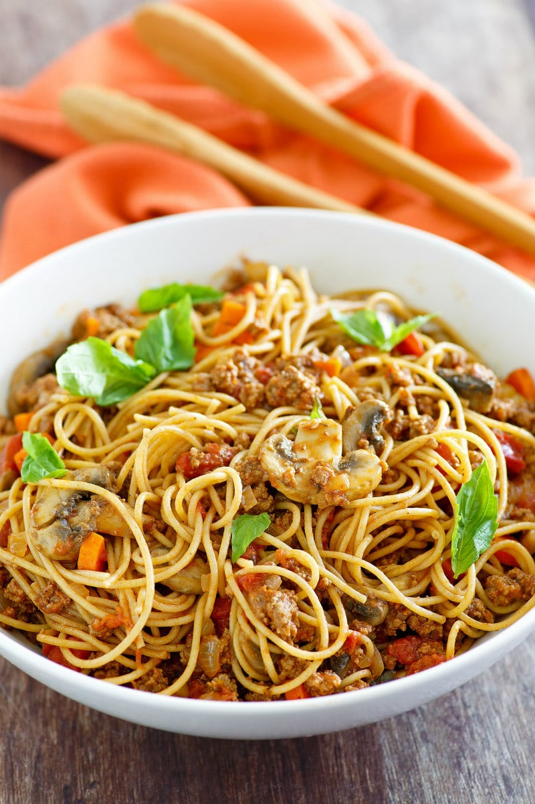
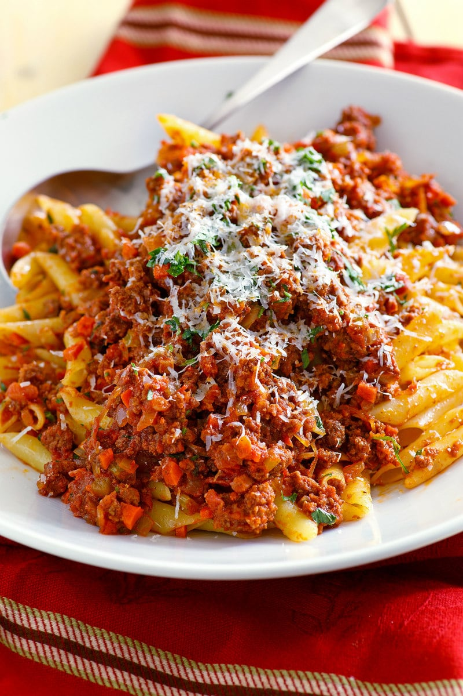
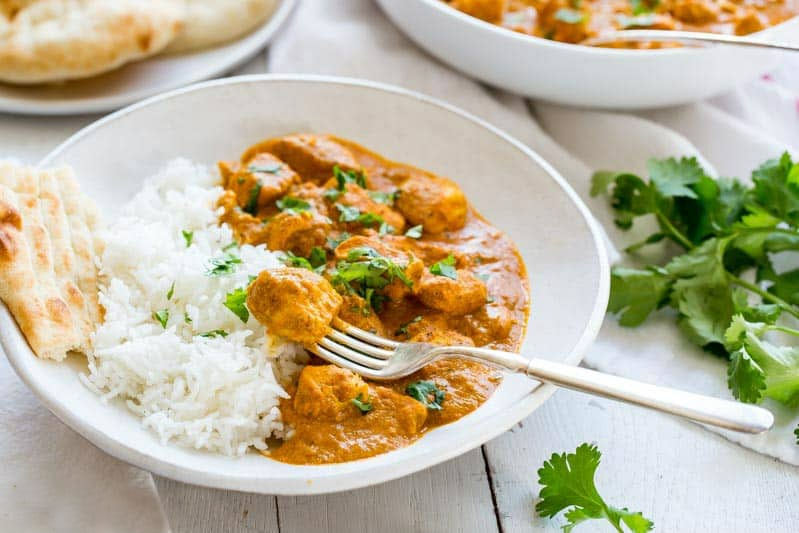
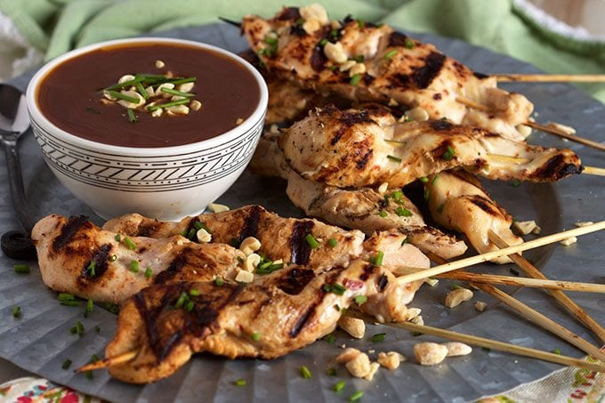

Food is something that brings us all together. Whether it is at the dinner table as a family or at a social event as a group, these clever food blog names from currently existing blogs will give you the perfect inspiration you need to eat right and get creative.
Bertucci’s Brick Oven Pizza and Pasta is a restaurant chain that can be found in eleven states in the Northeast. My husband grew up in Connecticut, and he loved going to Bertucci’s for their awesome Pizza. Bertucci’s Nolio Pizza was his absolute favorite.
The Nolio Pizza is described by Bertucci’s as having Parma-style prosciutto, caramelized onions, lightly seasoned cream, Pecorino Romano, and mozzarella. I’ve left off the Parmesan on this recipe (but you can certainly top it with a little Parm, if you’d like), and the cream sauce is seasoned as slightly lemony. It sounds like it might be an odd combination, but it’s totally not. It’s an amazing pizza!
WEIGHT WATCHERS SPAGHETTI BOLOGNESE
Weight Watchers Spaghetti Bolognese is a lightened up version of the classic bolognese. It’s completely filling and delicious, and it’s perfect for those who are watching their calories.
How To Make Weight Watchers Spaghetti Bolognese:
It sounds fancy, but it’s really very easy to make. The beef is cooked in a nonstick skillet, and then the garlic and onions are added in. Carrots and mushrooms are added in next and cooked some more. At this point, you’re going to add a can of diced tomatoes. If you want a more chunky sauce as you see pictured, just add the tomatoes. If you like a more saucy sauce, you can add a can of tomato puree instead (or give the diced tomatoes a whir in the blender before adding).
You’ll also add tomato paste, oregano and basil. This mixture is simmered for about 10 minutes. Then you’ll add milk and simmer some more until the sauce is thickened. If you want this sauce to be a little bit more like authentic bolognese sauce, you can add in 1 slice of chopped bacon when you cook the beef. And add 1/4 cup of white wine to the sauce when you add the milk. Keep in mind that this will up the WW Freestyle point count to 10. This recipe can also be made gluten-free by using gluten-free pasta in place of the whole wheat spaghetti.

CHRISTMAS PASTA
This Christmas Pasta recipe is perfect for the holidays because it feeds a large crowd.
WHAT IS CHRISTMAS PASTA?
This recipe, originally created by Rachael Ray, serves two purposes. It’s pretty as a Christmas Pasta because of the red sauce and the green parsley garnish. And it’s a nice recipe for the holidays because there are usually quite a few people around, and this recipe makes enough to serve twelve people.
If you don’t have twelve people hanging around at the same time, that’s okay! Make the sauce recipe, and then make half of the pasta (16-ounces). The flavor of the pasta sauce totally improves the longer it sits. So if you serve some up one day and then finish it up a couple days later, that’s a good thing! You can also freeze half of the sauce if you don’t want to eat it all within a week’s time.

INDIAN CUISINE
INDIAN BUTTER CHICKEN
This Indian Butter Chicken Recipe is an easy, make-at-home version of the restaurant classic.
WHAT IS INDIAN BUTTER CHICKEN?
Indian Butter Chicken, also known as Chicken Makhani, is a classic, flavorful Indian dish. It was developed in the 1950’s by three partners who owned a restaurant in India. The dish was made “accidentally” when they combined leftover chicken with a tomato gravy that was rich in butter and cream. Indian Butter Chicken was born!
Chicken is marinated for several hours in a yogurt and spice mixture. Then the chicken is cooked in a skillet with a spicy tomato sauce. You control the heat, so make it as spicy or as mild as you want. But I say bring on the heat! You can use boneless skinless chicken breasts or thighs in this dish, but for our table we prefer bite sized chunks of tender chicken breast.
To lighten the dish a little, we have great success using half-and-half for the cream, but feel free to use full-fat cream if you prefer, or if you already have it on hand.

CHICKEN TIKKA MASALA
Chicken Tikka Masala ~ an incredibly popular dish made with tender chunks of yogurt marinated chicken, folded into a richly spiced tomato sauce with just a hint of heat.
The beautiful orange-red color is common in all Chicken Tikka Masala dishes, but the spices vary greatly from recipe to recipe. Many years ago when I tried Chicken Tikka Masala for the very first time, I knew this dish would be a regular on our menu rotation. It was new and exciting and I was surprised to find the chicken incredibly tender, and the aromatic sauce rich with warm spices. The aroma of this dish is certainly enticing with hints of cinnamon and fresh ginger.
Masala loosely means a mixture of spices commonly used in South Asian cooking. Garam masala is one of the spices used heavily in traditional Indian cooking and is readily available in the spice section of your local grocery store. Garam masala is usually a mixture of ground coriander, black pepper, cumin, cardamon and cinnamon.
Chicken Tikka Masala is one the most popular dishes in the United Kingdom and has been called the true national dish of Britain. The origins of the recipe are unclear, and often disputed, but the taste is certainly memorable. If you can’t travel to Britain, India, Pakistan or Bangladesh where this dish is often served in restaurants, then make it at home. It’s worth a little effort to multitask this to your table. Enjoy a wonderful culinary adventure without leaving your own kitchen!
THAI CUISINE
SATAY CHICKEN WITH SPICY PEANUT SAUCE
Quick and easy, Satay Chicken with Spicy Peanut Sauce is a family dinner winner! The coconut marinade keeps the chicken tender and the spicy sauce is ready in minutes- perfect for busy weeknights
This Satay Chicken with Spicy Peanut Sauce makes a frequent appearance on my family dinner table all year long. It’s so easy to make and you can even marinade the chicken overnight for a quick dinner during the week.
And who doesn’t love food on a stick? My kids will, basically, eat anything if it’s served on a stick. Plus, it helps to keep portion control in check if you’re following a healthy diet this year.
I cook the Satay Chicken on a grill pan when it’s too chilly to cook outside but when the weather is warmer, these are fantastic cooked on the grill. Just remember to soak your skewers for at least an hour before hand to prevent them from catching on fire.

THAI BEEF TACOS WITH LIME CILANTRO SLAW
If you’re looking for something excellent to make for dinner, try these Thai Beef Tacos with Lime Cilantro Slaw. They’re not your typical taco recipe, and they pack a ton of flavor.
his is an easy, fairly quick meal. The “marinade” for the flank steak is super basic. It’s so basic, in fact, that I worried that there wouldn’t be much flavor for the beef. The marinade includes sugar, ginger, fish sauce, chili-garlic sauce, pepper and garlic. That all gets thrown into a big zip baggie with the flank steak, and it sits for just 20 minutes in the fridge.
The slaw is quick too- especially if you buy the bags of coleslaw mix and matchstick carrots. It’s tossed with similar spices as well as lime juice and cilantro.